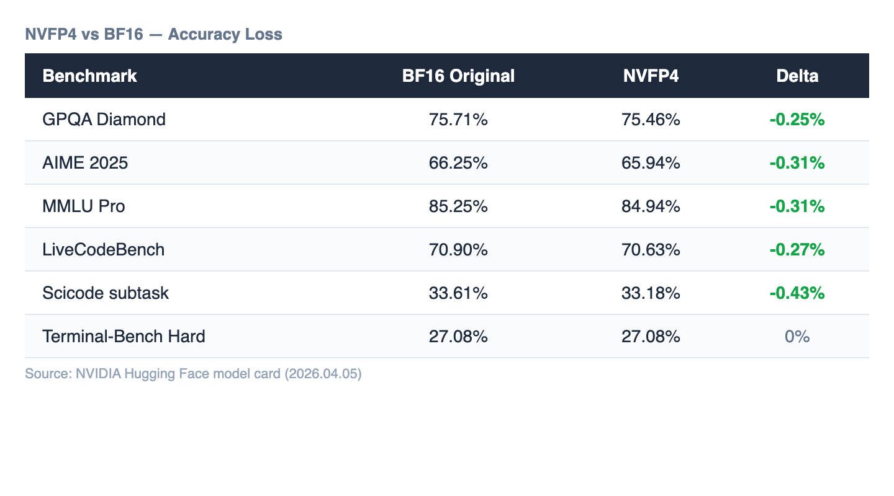
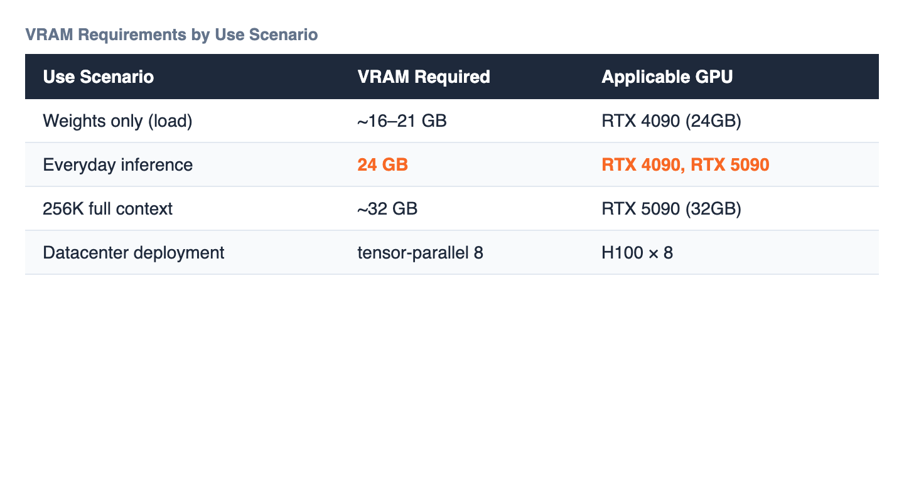

Three days after Google DeepMind released the Gemma 4 family under Apache 2.0, NVIDIA quietly uploaded something to Hugging Face that may matter just as much: an NVFP4-quantized version of the 31B Dense model.
The headline numbers: 0.25% accuracy loss on GPQA Diamond. 256K context window preserved. Everyday inference on a 24GB consumer GPU. All three hold at the same time.
If Part 1 of our Gemma 4 analysis said the license "opened the door to sovereign AI," this is how you actually walk through it.
NVFP4 is a 4-bit floating-point format with a simple layout: 1 sign bit, 2 exponent bits, 1 mantissa bit. The representable range is approximately -6 to 6 — far too narrow for LLM weights on its own.
The key is dual-level block scaling. Every 16 values share one FP8 scale factor (twice as granular as the competing MXFP4 format's 32-value blocks). An FP32 scalar is then applied globally on top of those FP8 blocks. The effective bit width comes out to 4.5 bits per value, delivering 3.5x memory savings versus FP16 and 1.8x versus FP8.
NVIDIA's Blackwell Tensor Cores handle this block grouping and dynamic scaling at the hardware level. Testing on H100 (Hopper) has also been completed, though peak performance comes from Blackwell.
Theory means nothing without measurement. Here are NVIDIA's published benchmarks comparing the BF16 original against the NVFP4 quantized version:

Across every benchmark, the absolute loss is under 0.5% — within the reproducibility margin between human evaluators. The quantization method is PTQ (Post-Training Quantization) using 300,000 CNN DailyMail articles as calibration data. No retraining required.
The practical question everyone asks: what GPU do I actually need?

For everyday inference with short-to-medium contexts, a single RTX 4090 (24GB) works. For the full 256K context window, you'll want an RTX 5090 (32GB). Datacenter deployments use tensor-parallel 8 across H100s. The important point: frontier-level scientific reasoning on a consumer GPU is now a reality, not a roadmap item.
Three updates worth noting since our initial Gemma 4 analysis:
Supported in vLLM v0.17.2rc1 and above:
pip install vllm>=0.17.2rc1
vllm serve nvidia/Gemma-4-31B-IT-NVFP4 \
--quantization modelopt \
--tensor-parallel-size 1That's it. Frontier-level inference, locally, with no API dependency.
With Apache 2.0 removing the legal barrier and NVFP4 removing the hardware barrier, the remaining constraint for sovereign AI infrastructure is data quality. Running a 31B model on-premises is now straightforward — but the quality of what you feed it determines everything: fine-tuning outcomes, RAG accuracy, agent reliability.
The model and the hardware are ready. The question is whether your data is.